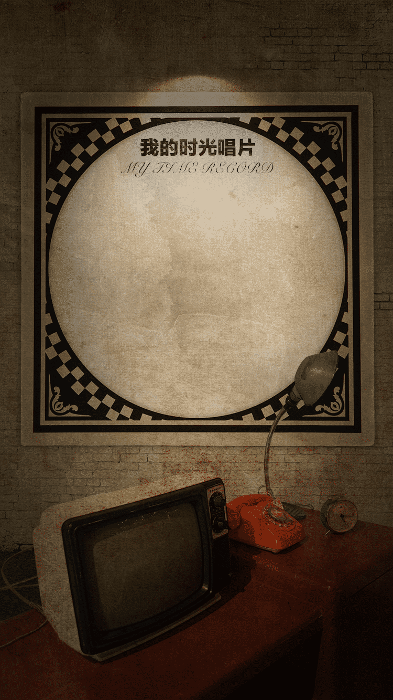

<!DOCTYPE html>
<html lang="en">

<head>
    <meta charset="UTF-8">
    <title>Document</title>
    <style type="text/css">
        canvas {
            position: absolute;
            left: 19%;
            top: 28%;
        }

        * {
            margin: 0;
            padding: 0;
        }

        html,
        body {
            width: 100%;
            height: 100%;
            position: relative;
        }

        img {
            width: 100%;
        }
    </style>
</head>

<body>

    <!--  -->
    <script type="text/javascript">
        let pageW = document.documentElement.offsetWidth * 0.62;

        var mW = pageW - 10;
        var mH = pageW;
        var mData = [
            ['80年代', 77],
            ['90年代', 72],
            ['20年代', 46],
            ['10年代', 50]
        ];
        var mCount = mData.length; //边数 
        var mCenter = mW / 2; //中心点
        var mRadius = mCenter - 50; //半径(减去的值用于给绘制的文本留空间)
        var mAngle = Math.PI * 2 / mCount; //角度
        var mCtx = null;
        var mColorPolygon = '#000000'; //多边形颜色
        var mColorLines = '#000000'; //顶点连线颜色
        var mColorText = '#261a06';

        //初始化
        (function () {
            var canvas = document.createElement('canvas');
            // document.body.appendChild(canvas);
            canvas.height = mH;
            canvas.width = mW;
            mCtx = canvas.getContext('2d');
            drawPolygon(mCtx);
            drawLines(mCtx);

            drawRegion(mCtx);
            drawText(mCtx);
            // drawCircle(mCtx);
        })();

        // 绘制多边形边
        function drawPolygon(ctx) {
            ctx.save();

            ctx.strokeStyle = mColorPolygon;
            var r = mRadius / mCount; //单位半径
            //画6个圈
            // for (var i = 0; i < mCount; i++) {
            //     ctx.beginPath();
            //     var currR = r * (i + 1); //当前半径
            //     //画6条边
            //     for (var j = 0; j < mCount; j++) {
            //         var x = mCenter + currR * Math.cos(mAngle * j);
            //         var y = mCenter + currR * Math.sin(mAngle * j);

            //         ctx.lineTo(x, y);
            //     }
            //     ctx.closePath()
            //     ctx.stroke();
            // }

            for (var i = 0; i < 4; i++) {
                ctx.beginPath();
                console.log(mCenter / (5 - i))
                ctx.arc(mCenter, mH / 2, mCenter * 1.1 / (4 - i * 0.8) + mCenter * 0.05, 0, 2 * Math.PI);
                ctx.stroke();
            }


            ctx.restore();
        }

        //顶点连线
        function drawLines(ctx) {
            ctx.save();
            console.log(mAngle);
            ctx.beginPath();
            ctx.strokeStyle = mColorLines;

            for (var i = 0; i < mCount; i++) {
                var x = mCenter + mRadius * Math.cos(mAngle * i);
                var y = mCenter + mRadius * Math.sin(mAngle * i);

                ctx.moveTo(mCenter, mCenter);
                ctx.lineTo(x, y);
            }

            ctx.stroke();

            ctx.restore();
        }

        //绘制文本
        function drawText(ctx) {
            ctx.save();

            var fontSize = mCenter / 8;
            ctx.font = fontSize + 'px Microsoft Yahei';
            ctx.fillStyle = mColorText;

            for (var i = 0; i < mCount; i++) {
                // console.log(i);
                var x = mCenter + mRadius * Math.cos(mAngle * i);
                var y = mCenter + mRadius * Math.sin(mAngle * i);

                if (mAngle * i >= 0 && mAngle * i <= Math.PI / 2) {
                    ctx.fillText(mData[i][0], x - fontSize * 2, y + fontSize * 0.5);
                } else if (mAngle * i > Math.PI / 2 && mAngle * i <= Math.PI) {
                    ctx.fillText(mData[i][0], x - ctx.measureText(mData[i][0]).width + fontSize * 2, y + fontSize * 0.5);
                } else if (mAngle * i > Math.PI && mAngle * i <= Math.PI * 3 / 2) {
                    ctx.fillText(mData[i][0], x - ctx.measureText(mData[i][0]).width + fontSize * 1, y + fontSize * 0.5);
                } else {
                    ctx.fillText(mData[i][0], x, y);
                }

            }

            ctx.restore();
        }


        //画点
        function drawCircle(ctx) {
            ctx.save();

            var r = mCenter / 18;
            for (var i = 0; i < mCount; i++) {
                var x = mCenter + mRadius * Math.cos(mAngle * i) * mData[i][1] / 100;
                var y = mCenter + mRadius * Math.sin(mAngle * i) * mData[i][1] / 100;

                ctx.beginPath();
                ctx.arc(x, y, r, 0, Math.PI * 2);
                ctx.fillStyle = 'rgba(0, 0, 0, 0.7)';
                ctx.fill();
            }

            ctx.restore();
        }

        //绘制数据区域
        function drawRegion(ctx) {
            ctx.save();

            ctx.beginPath();
            for (var i = 0; i < mCount; i++) {
                var x = mCenter + mRadius * Math.cos(mAngle * i) * mData[i][1] / 100;
                var y = mCenter + mRadius * Math.sin(mAngle * i) * mData[i][1] / 100;

                ctx.lineTo(x, y);
            }
            ctx.closePath();
            ctx.fillStyle = 'rgba(0, 0, 0, 0.7)';
            ctx.fill();

            ctx.restore();
        }
    </script>

</body>

</html>